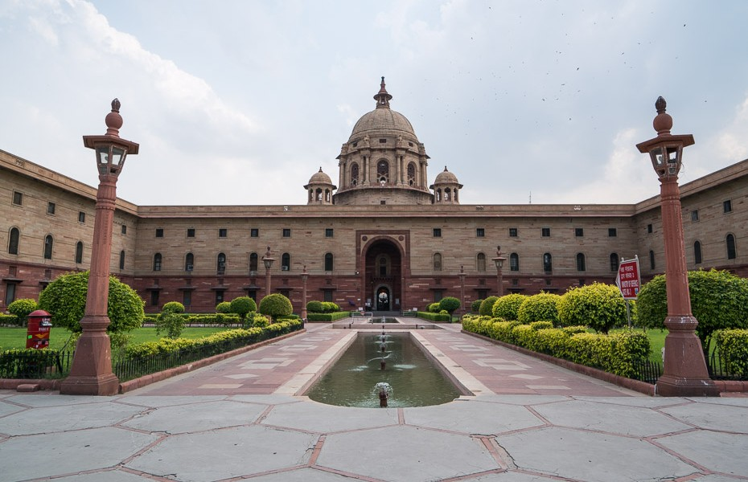

The President
The President of India is the nominal/constitutional/ceremonial
head of the Indian State. The president is the first citizen of
the country.
In the Parliamentary form of Government provided by the
constitution, the President has been made only a nominal
executive, the real executive being the Council of Ministers
headed by the Prime Minister. All of the powers vested in the
president are, in practice, exercised by the prime minister with
the help of the Council of Ministers. The president is bound by
the constitution to act on the advice of the prime minister and
cabinet as long as the advice is not violating the constitution.
Qualification of the President (Article 58)
Under Article 58, a person to be eligible for election as
President should fulfil the following qualifications:
- He must be a citizen of India.
- He must have completed 35 years of age.
-
He must be qualified for election as a member of the Lok Sabha
(Representation of the People Act, 1951).
-
He should not hold any office of profit under the Union
Government or any State Government or any local authority or
any other public authority.
Further a candidate to be nominated for the office of president
needs 50 electors as proposers and 50 electors as seconders for
his name to appear on the ballot. Every candidate has to make a
security deposit of Rs. 15000 in RBI. The security deposit is
liable to be forfeited in case the candidate fails to secure
one-sixth of the votes polled.
Election of President (Article 54 and 55)
Articles 54 and 55 talk about the election of president.
The President is elected not directly by the people but by
members of electoral college consisting of:
-
the elected members of both the Houses of Parliament (M.Ps).
-
the elected members of the legislative assemblies of the
states (MLAs).
-
the elected members of the legislative assemblies of the Union
Territories of Delhi, Puducherry and Jammu and Kashmir.
Thus, the following do not participate in the election
of the President:
- the nominated members of both of Houses of Parliament.
-
the nominated members of the state legislative assemblies.
-
the members (both elected and nominated) of the state
legislative councils (in case of the bicameral legislature)
-
the nominated members of the Legislative Assemblies of Delhi,
Puducherry and Jammu and Kashmir.
Manner of election of President
The President’s election is held in accordance with the system
of
proportional representation by means of the single
transferable vote and the voting is by secret ballot
. This system ensures that the successful candidate is returned
by the absolute majority of votes.
A candidate, in order to be declared elected to the office of
President, must secure a fixed quota of votes. The candidate who
gets more than 50% of votes is considered elected.
Procedure
Each elector is given only one ballot paper. The voter is
required to indicate his preferences by marking 1, 2, 3, 4, etc.
against the names of candidates. This means that the voter can
indicate as many preferences as there are candidates in the
fray.
In the first phase, the first preference votes are counted. In
case a candidate secures the required quota in this phase, he is
declared elected. Otherwise, the process of
transfer of votes is set in motion. The ballots of the
candidate securing the least number of first preference votes
are cancelled and his second preference votes are transferred to
the first preference votes of other candidates. This process
continues till a candidate secures the required quota.
Under Article 71, all disputes regarding election of the
President are inquired into and decided by the Supreme Court
whose decision is final.
Oath or Affirmation by the President (Article 60)
Before entering upon his office, the President has to make and
subscribe to an oath or affirmation. In his oath, the President
swears:
"I, (name), do swear in the name of God (or solemnly affirm)
that I will faithfully execute the office of President (or
discharge the functions of the President) of the Republic of
India, and will to the best of my ability preserve, protect and
defend the Constitution and the law, and that I will devote
myself to the service and well-being of the people of the
Republic of India."
The oath of office to the President is administered by the
Chief Justice of India and in his absence, the seniormost
judge of the Supreme Court available.
Any person acting as the President also undertake similar oath.
Conditions of President’s Office (Article 59)
The Constitution lays down the following conditions of the
President’s office:
-
The president shall not be a member of either house of the
parliament or of a house of the legislature of any state, and
if a member of either house of the parliament or of a house of
the legislature of any state be elected president, he shall be
deemed to have vacated his seat in that house on the date on
which he enters upon his office as president.
-
The president shall not hold any other office of profit.
-
The president shall be entitled without payment of rent, to
the use of his official residence (the Rashtrapathi Bhavan,
New Delhi).
-
The president shall be entitled to such emoluments, allowances
and privileges as may be determined by Parliament.
-
The emoluments and allowances of the president shall not be
diminished during his term of office.

The Rashtrapathi Bhavan
Western end of Rajpath in New Delhi
The President is entitled to a number of privileges and
immunities. He enjoys personal immunity from legal liability for
his official acts. During his term of office, he is immune from
any criminal proceedings, even in respect of his personal acts.
He cannot be arrested or imprisoned. However, after giving two
month's notice, civil proceedings can be instituted against him
during his term of office in respect of his personal acts.
Term of President's Office (Article 56)
-
Under Article 56, the President shall hold office for a term
of 5 years from the date on which he enters upon his office.
-
The President may resign from his office by writing under his
hand addressed to the
Vice-President.
-
Further, the President can also be removed from his office
before completion of the term by the process of impeachment.
-
The President is also eligible for re-election to that office.
He may be elected for any number of terms.
Removal of the President by the Supreme Court
-
According to Article 71, the Supreme Court shall inquire and
decide regarding all doubts and disputes arising out of or
in connection with the election of a president.
-
The Supreme Court can remove the president for the electoral
malpractices or upon being not eligible to be a member of
the Lok Sabha under the Representation of the People Act,
1951.
Impeachment of the President (Article 61)
Under Article 61, the president may also be removed before the
expiry of the term through impeachment for
violating the Constitution of India by the Parliament of
India.
-
The impeachment can be initiated by either House of the
Parliament.
-
The house initiates the process by levelling the charges
against the president. The charges are contained in a notice
that has to be
signed by at least one-quarter (1/4th) of the total
members of that house. The notice is sent up to the president
and 14 days later , it is taken up for consideration.
-
A resolution to impeach the president has to be passed by a
two-thirds majority of the total number of members of
the originating house. It is then sent to the other house.
-
The other house investigates the charges that have been made.
During this process, the president has the right to defend
himself through an authorised counsel.
-
If the second house also approves the charges made by special
majority again, the president stands impeached and is deemed
to have vacated their office from the date when such a
resolution stands passed.
Note:
-
the nominated members of either House of Parliament can
participate in the impeachment of the President though they
do not participate in his election;
-
the elected members of the legislative assemblies of states
and the Union Territories of Delhi, Puducherry and Jammu and
Kashmir do not participate in the impeachment of the
President though they participate in his election.
No President of India has so far been impeached.
Vacancy in the President’s Office (Article 62)
Under Article 62 a vacancy in the President’s office can occur
in any of the following ways:
- On the expiry of his tenure of 5 years.
- By his resignation. (by writing to the Vice President)
- By his death.
- Removal by supreme court.
- Removal by Impeachment.
When the vacancy is going to be caused by the expiration of the
term of the sitting President, an election to fill the vacancy
must be held before the expiration of the term.
If the office falls vacant by resignation, removal, death or
otherwise, then election to fill the vacancy should be held
within six months from the date of the occurrence of such
a vacancy. The newly-elected President remains in office for a
full term of five years from the date he assumes charge of his
office.
When a vacancy occurs in the office of the President due to his
resignation, removal, death or when the sitting President is
unable to discharge his functions due to absence, illness or any
other cause, the
Vice-President acts as the President until a new
President is elected or until the President resumes his office
(article 65). In case the office of Vice-President is also
vacant, the Chief Justice of India (or if his office is
also vacant, the
seniormost judge of the Supreme Court available) acts as
the President or discharges the functions of the President.
When any person, ie, Vice-President, chief justice of India, or
the seniormost judge of the Supreme Court is acting as the
President or discharging the functions of the President, he
enjoys all the powers and immunities of the President and is
entitled to such emoluments, allowances and privileges as are
determined by the Parliament.
Powers and Functions of the President
The powers enjoyed and the functions performed by the President
can be categorised into:
- Executive powers
- Legislative powers
- Financial powers
- Judicial powers
- Diplomatic powers
- Military powers
- Emergency powers
Executive Powers
-
All executive actions of the Government of India are formally
taken in his name. He can make rules specifying the manner in
which the orders and other instruments made and executed in
his name shall be authenticated.
-
He can make rules for more convenient transaction of business
of the Union government, and for allocation of the said
business among the ministers.
-
He appoints Prime Minister, other Ministers, the
Attorney-General of India, the Comptroller and Auditor General
of India, Chairman and Members of UPSC, Chief Election
Commissioner and other Members of Election Commission,
Governors, Members of Finance Commission etc.
-
He can seek any information relating to the administration of
affairs of the Union, and proposals for legislation from the
prime minister.
-
He can appoint a commission to investigate into the conditions
of SCs, STs and other backward classes.
-
He can appoint an inter-state council to promote Centre-state
and inter-state cooperation.
-
He directly administers the union territories through
administrators appointed by him.
-
He can declare any area as scheduled area and has powers with
respect to the administration of scheduled areas and tribal
areas.
Legislative Powers
-
He can summon or prorogue the Parliament and dissolve the Lok
Sabha. He can also summon a joint sitting of both the Houses
of Parliament, which is presided over by the Speaker of the
Lok Sabha.
-
He can address the Parliament at the commencement of the first
session after each general election and the first session of
each year.
-
He can appoint any member of the Lok Sabha to preside over its
proceedings when the offices of both the Speaker and the
Deputy Speaker fall vacant. Similarly, he can also appoint any
member of the Rajya Sabha to preside over its proceedings when
the offices of both the Chairman and the Deputy Chairman fall
vacant.
-
He nominates 12 members of the Rajya Sabha from amongst
persons having special knowledge or practical experience in
literature, science, art and social service.
-
He used to have the power to nominate two members to the Lok
Sabha from the Anglo-Indian Community. But this was done away
by the
104th Constitutional Amendment Act, 2019.
-
He decides on questions as to disqualifications of members of
the Parliament, in consultation with the Election Commission.
-
His prior recommendation or permission is needed to introduce
certain types of bills in the Parliament. For example, a bill
involving expenditure from the Consolidated Fund of India
(Money Bill), or a bill for the alteration of boundaries of
states or creation of a new state.
-
When a bill is sent to the President after it has been passed
by the Parliament, he can:
- give his assent to the bill, or
- withhold his assent to the bill, or
-
return the bill (if it is not a money bill) for
reconsideration of Parliament.
However, if the bill is passed again by the Parliament, with
or without amendments, the President has to give his assent to
the bill.
-
When a bill passed by a state legislature is reserved by the
governor for consideration of the President, the President
can:
- give his assent to the bill, or
- withhold his assent to the bill, or
-
direct the governor to return the bill (if it is not a money
bill) reconsideration of the state legislature.
It should be noted that it is not obligatory for the President
to give his assent even if the bill is again passed by the
state legislature and sent again to him for his consideration.
-
He lays the reports of the Comptroller and Auditor General,
Union Public Service Commission, Finance Commission, and
others, before the Parliament.
-
Under Article 123, he can promulgate ordinances on
those
subjects on which the Parliament can make laws (i.e.,
union and concurrent lists), when
either or both houses of Parliament are not in session
(on the
advice of the council of ministers headed by the prime
minister
). These ordinances must be approved by the Parliament
within six weeks from its reassembly. He can also
withdraw an ordinance at any time.
The 38th Constitutional Amendment Act of 1975 made the
President’s satisfaction for promulgating Ordinance is final
and conclusive and beyond judicial review. But, this provision
was deleted by the 44th Constitutional Amendment Act of 1978.
Thus, the President’s satisfaction is justiciable on the
ground of malafide.
Financial Powers
-
A money bill can be introduced in the parliament only with the
president's recommendation.
-
The president lays the Annual Financial Statement, i.e. the
Union budget, before the parliament.
-
The president can take advances out of the Contingency Fund of
India to meet unforeseen expenses.
-
The president constitutes a Finance Commission every five
years to recommend the distribution of the taxes between the
centre and the States.
Judicial Powers
-
The primary duty of the president is to preserve, protect and
defend the constitution and the law of India per Article 60.
-
He appoints the Chief Justice and the judges of Supreme Court
and high courts.
-
He dismisses the judges if and only if the two Houses of the
parliament pass resolutions to that effect by a two-thirds
majority of the members present.
-
He appoints the Indian government's chief legal adviser,
Attorney General of India who holds the office during the
pleasure of the president.
-
Under Article 143, he can seek advice from the Supreme Court
on any question of law or fact. However, the advice tendered
by the Supreme Court is not binding on the President.
-
Under Article 72, he can grant pardon, reprieve,
respite and remission of punishment, or suspend, remit or
commute the sentence of any person convicted of any offence:
-
In all cases where the punishment or sentence is by a court
martial (military court).
-
In all cases where the punishment or sentence is for an
offense against a Union law; and
-
In all cases where the sentence is a sentence of death.
-
Pardon: removes both the sentence and the conviction
and completely absolves the convict from all sentences,
punishments and disqualifications.
-
Commutation: substitutes one form of punishment with
a lighter form. For example, a death sentence may be
commuted to rigorous imprisonment, which in turn may be
commuted to a simple imprisonment.
-
Remission: reduces the period of sentence without
changing its character. For example, a sentence of rigorous
imprisonment for two years may be remitted to rigorous
imprisonment for one year.
-
Respite: awards a lesser sentence in place of one
originally awarded due to some special fact, such as the
physical disability of a convict or the pregnancy of a woman
offender.
-
Reprieve: implies a stay of the execution of a
sentence (especially that of death) for a temporary period.
Its purpose is to enable the convict to have time to seek
pardon or commutation from the President
Diplomatic Powers
-
The international treaties and agreements are negotiated and
concluded on behalf of the President.
-
He Sends and receives diplomats like Ambassadors, High
Commissioners, and so on.
Military Powers
-
He is the supreme commander of the defence forces of India. In
that capacity, he appoints the chiefs of the Army, the Navy
and the Air Force.
-
He can declare war or conclude peace, subject to the approval
of the Parliament.
Emergency Powers
In addition to the normal powers mentioned above, the
Constitution confers extraordinary powers on the President to
deal with the following three types of emergencies:
- National Emergency (Article 352)
- President’s Rule (Article 356 & 365)
- Financial Emergency (Article 360)
Veto Powers of the President
There are four types of Veto:
-
Absolute veto, that is, withholding of assent to the
bill passed by the legislature.
-
Qualified veto, which can be overridden by the
legislature with a higher majority.
-
Suspensive veto, which can be overridden by the
legislature with an ordinary majority.
-
Pocket veto , that is, taking no action on the bill
passed by the legislature.
Of the above four, the President of India is vested with three–
absolute veto, suspensive veto and pocket veto. There is no
qualified veto in the case of Indian President.
Closer Look at three veto powers of the President
Absolute Veto
The power of the President to withhold the assent to the bill is
termed as his absolute veto. When the President exercises his
absolute veto, a bill will never see the light of day.
President uses his absolute veto in the following two cases:
-
When the bill passed by the Parliament is a Private Member
Bill (i.e., bills introduced by any member of Parliament who
is not a minister).
-
When the cabinet resigns before President could give his
assent to the bill. The new cabinet may advise the President
to not give his assent to the bill passed by the old cabinet.
Suspensive Veto
The President exercises this veto when he returns a bill for
reconsideration of the Parliament. However, if the bill is
passed again by the Parliament with or without amendments and
again presented to the President, it is obligatory for the
President to give his assent to the bill.
The President does not possess this veto in the case of money
bills. The President can either give his assent to a money bill
or withhold his assent to a money bill but cannot return it for
the reconsideration of the Parliament. Normally, the President
gives his assent to money bill as it is introduced in the
Parliament with his previous permission.
Pocket Veto
In this case, the President neither ratifies nor rejects nor
returns the bill, but simply keeps the bill pending for an
indefinite period.
Constitution does not give any time-limit to President within
which he has to act upon the bill.
At a Glance: Types of bills and Presidents actions
| Types of Bills |
President Can |
President Cannot |
| Ordinary bills |
Ratify
Return
Reject
Withhold |
- |
| Money Bills |
Ratify
Reject
Withhold |
Return |
| Constitutional Amendment Bills |
Ratify |
Reject
Return
Withhold |
Articles Related to President
| Article No. |
Deals with |
| 52 |
The President of India. |
| 53 |
Executive power of the Union. |
| 54 |
Election of President. |
| 55 |
Manner of election of President. |
| 56 |
Term of office of President. |
| 57 |
Eligibility for re-election. |
| 58 |
Qualifications for election as President. |
| 59 |
Conditions of President’s office. |
| 60 |
Oath or affirmation by the President. |
| 61 |
Procedure for impeachment of the President |
| 62 |
Time of holding election to fill vacancy in the office
of President and the term of office of person elected to
fill casual vacancy.
|
| 65 |
Vice-President to act as President or to discharge his
functions.
|
| 71 |
Matters relating to the election of President or
Vice-President.
|
| 72 |
Power of President to grant Pardons. |
| 74 |
Council of ministers to aid and advise the President
|
| 75 |
Other provisions as to ministers like appointment, term,
salaries, etc.
|
| 76 |
Attorney-General of India |
| 77 |
Conduct of business of the Government of India |
| 78 |
Duties of Prime Minister in respect to furnishing of
information to the President, etc.
|
| 85 |
Sessions of Parliament, prorogation and dissolution
|
| 111 |
Assent to bills passed by the Parliament |
| 123 |
Power of President to promulgate ordinances. |
| 143 |
Power of President to consult Supreme Court |